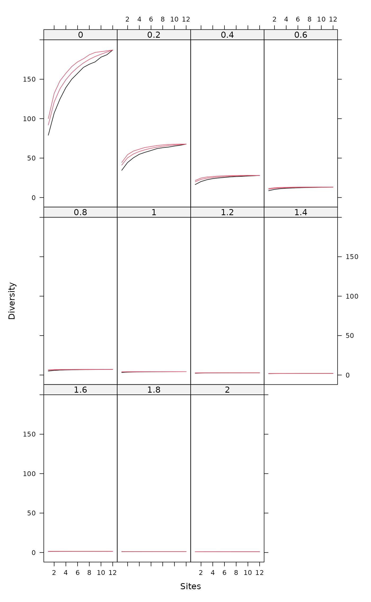
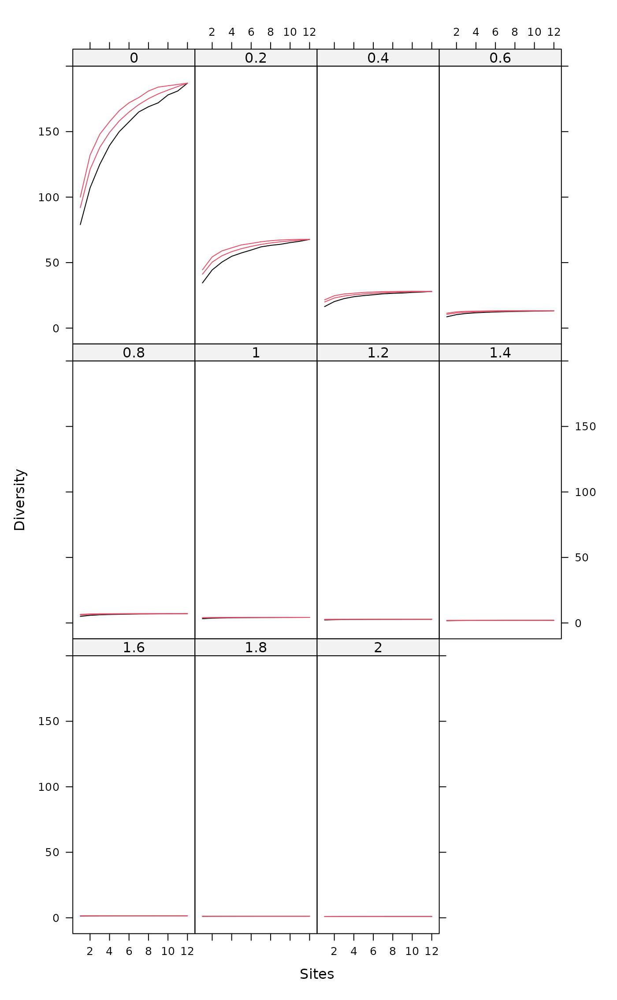

Tsallis Diversity and Corresponding Accumulation Curves
tsallis.RdFunction tsallis find Tsallis diversities with any scale or the corresponding evenness measures. Function tsallisaccum finds these statistics with accumulating sites.
Usage
tsallis(x, scales = seq(0, 2, 0.2), norm = FALSE, hill = FALSE)
tsallisaccum(x, scales = seq(0, 2, 0.2), permutations = 100,
raw = FALSE, subset, ...)
# S3 method for class 'tsallisaccum'
persp(x, theta = 220, phi = 15, col = heat.colors(100), zlim, ...)Arguments
- x
Community data matrix or plotting object.
- scales
Scales of Tsallis diversity.
- norm
Logical, if
TRUEdiversity values are normalized by their maximum (diversity value at equiprobability conditions).- hill
Calculate Hill numbers.
- permutations
Usually an integer giving the number permutations, but can also be a list of control values for the permutations as returned by the function
how, or a permutation matrix where each row gives the permuted indices.- raw
If
FALSEthen return summary statistics of permutations, and if TRUE then returns the individual permutations.- subset
logical expression indicating sites (rows) to keep: missing values are taken as
FALSE.- theta, phi
angles defining the viewing direction.
thetagives the azimuthal direction andphithe colatitude.- col
Colours used for surface.
- zlim
Limits of vertical axis.
- ...
Other arguments which are passed to
tsallisand to graphical functions.
Details
The Tsallis diversity (also equivalent to Patil and Taillie diversity) is a one-parametric generalised entropy function, defined as:
$$H_q = \frac{1}{q-1} (1-\sum_{i=1}^S p_i^q)$$
where \(q\) is a scale parameter, \(S\) the number of species in
the sample (Tsallis 1988, Tothmeresz 1995). This diversity is concave
for all \(q>0\), but non-additive (Keylock 2005). For \(q=0\) it
gives the number of species minus one, as \(q\) tends to 1 this
gives Shannon diversity, for \(q=2\) this gives the Simpson index
(see function diversity).
If norm = TRUE, tsallis gives values normalized by the
maximum:
$$H_q(max) = \frac{S^{1-q}-1}{1-q}$$
where \(S\) is the number of species. As \(q\) tends to 1, maximum is defined as \(ln(S)\).
If hill = TRUE, tsallis gives Hill numbers (numbers
equivalents, see Jost 2007):
$$D_q = (1-(q-1) H)^{1/(1-q)}$$
Details on plotting methods and accumulating values can be found on
the help pages of the functions renyi and
renyiaccum.
Value
Function tsallis returns a data frame of selected
indices. Function tsallisaccum with argument raw = FALSE
returns a three-dimensional array, where the first dimension are the
accumulated sites, second dimension are the diversity scales, and
third dimension are the summary statistics mean, stdev,
min, max, Qnt 0.025 and Qnt 0.975. With
argument raw = TRUE the statistics on the third dimension are
replaced with individual permutation results.
References
Tsallis, C. (1988) Possible generalization of Boltzmann-Gibbs statistics. J. Stat. Phis. 52, 479–487.
Tothmeresz, B. (1995) Comparison of different methods for diversity ordering. Journal of Vegetation Science 6, 283–290.
Patil, G. P. and Taillie, C. (1982) Diversity as a concept and its measurement. J. Am. Stat. Ass. 77, 548–567.
Keylock, C. J. (2005) Simpson diversity and the Shannon-Wiener index as special cases of a generalized entropy. Oikos 109, 203–207.
Jost, L (2007) Partitioning diversity into independent alpha and beta components. Ecology 88, 2427–2439.
Author
Péter Sólymos,
solymos@ualberta.ca, based on the code of Roeland Kindt and
Jari Oksanen written for renyi
See also
Plotting methods and accumulation routines are based on
functions renyi and renyiaccum. An object
of class tsallisaccum can be displayed with dynamic 3D function
rgl.renyiaccum in the vegan3d package. See also settings for
persp.
Examples
data(BCI)
i <- sample(nrow(BCI), 12)
x1 <- tsallis(BCI[i,])
x1
#> 0 0.2 0.4 0.6 0.8 1 1.2 1.4 1.6
#> 36 91 40.76595 19.77916 10.481929 6.081803 3.846109 2.625076 1.910150 1.463936
#> 38 81 36.25129 17.62089 9.387396 5.495029 3.516082 2.432141 1.793969 1.392413
#> 50 92 41.30206 20.08829 10.663128 6.187254 3.906616 2.659292 1.929248 1.474476
#> 41 101 45.01956 21.66615 11.353495 6.499317 4.052495 2.729799 1.964435 1.492566
#> 46 85 38.71044 19.06049 10.224553 5.987209 3.810489 2.611431 1.904913 1.461976
#> 13 92 41.98171 20.60707 10.962969 6.342501 3.982373 2.694847 1.945425 1.481616
#> 10 93 41.50369 20.10059 10.639881 6.164157 3.889803 2.648176 1.922207 1.470121
#> 34 91 40.76643 19.76149 10.454108 6.053163 3.821669 2.606302 1.896645 1.454634
#> 20 99 44.47873 21.56561 11.366723 6.530095 4.077327 2.746035 1.974163 1.498140
#> 8 87 39.98200 19.77567 10.603913 6.181934 3.908381 2.659907 1.928610 1.473408
#> 35 82 33.26640 14.81511 7.386325 4.164622 2.641859 1.851529 1.400886 1.120527
#> 44 80 36.52805 18.09206 9.782209 5.776652 3.705016 2.555595 1.873754 1.443791
#> 1.8 2
#> 36 1.169232 0.9648567
#> 38 1.124480 0.9365144
#> 50 1.174993 0.9679784
#> 41 1.184546 0.9731442
#> 46 1.168556 0.9646728
#> 13 1.178033 0.9692075
#> 10 1.172341 0.9663808
#> 34 1.163015 0.9607876
#> 20 1.187661 0.9748589
#> 8 1.173986 0.9671998
#> 35 0.932495 0.7983976
#> 44 1.157572 0.9578733
diversity(BCI[i,],"simpson") == x1[["2"]]
#> 36 38 50 41 46 13 10 34 20 8 35 44
#> TRUE TRUE TRUE TRUE TRUE TRUE TRUE TRUE TRUE TRUE TRUE TRUE
plot(x1)
 x2 <- tsallis(BCI[i,],norm=TRUE)
x2
#> 0 0.2 0.4 0.6 0.8 1 1.2 1.4
#> 36 1 0.8998669 0.8431295 0.8216927 0.8272622 0.8505725 0.8820846 0.9137994
#> 38 1 0.8797117 0.8089277 0.7777332 0.7771539 0.7978912 0.8304023 0.8662156
#> 50 1 0.9036351 0.8503796 0.8315870 0.8385564 0.8618931 0.8922712 0.9221556
#> 41 1 0.9130269 0.8644349 0.8473152 0.8541311 0.8762204 0.9047063 0.9323803
#> 46 1 0.9032439 0.8485357 0.8278693 0.8331492 0.8554539 0.8856795 0.9162035
#> 13 1 0.9185048 0.8723405 0.8549707 0.8595970 0.8786069 0.9042012 0.9298883
#> 10 1 0.9001004 0.8450759 0.8255446 0.8324355 0.8561634 0.8872568 0.9180261
#> 34 1 0.8998773 0.8423760 0.8195118 0.8233665 0.8451677 0.8757762 0.9073385
#> 20 1 0.9168340 0.8714005 0.8563191 0.8638340 0.8853802 0.9124664 0.9383899
#> 8 1 0.9154260 0.8674322 0.8491531 0.8535754 0.8729254 0.8992501 0.9258854
#> 35 1 0.7992527 0.6748192 0.6083778 0.5865659 0.5978626 0.6310844 0.6757387
#> 44 1 0.8954397 0.8371683 0.8152612 0.8204162 0.8431126 0.8740718 0.9056624
#> 1.6 1.8 2
#> 36 0.9407648 0.9611954 0.9754595
#> 38 0.8993700 0.9268720 0.9480763
#> 50 0.9471031 0.9657020 0.9784999
#> 41 0.9550896 0.9716606 0.9827793
#> 46 0.9422698 0.9621112 0.9760219
#> 13 0.9516896 0.9681999 0.9797424
#> 10 0.9438798 0.9632975 0.9767719
#> 34 0.9347873 0.9560842 0.9713457
#> 20 0.9594192 0.9746101 0.9847059
#> 8 0.9486740 0.9660687 0.9783170
#> 35 0.7233557 0.7684000 0.8081341
#> 44 0.9330830 0.9544340 0.9698467
plot(x2)
x2 <- tsallis(BCI[i,],norm=TRUE)
x2
#> 0 0.2 0.4 0.6 0.8 1 1.2 1.4
#> 36 1 0.8998669 0.8431295 0.8216927 0.8272622 0.8505725 0.8820846 0.9137994
#> 38 1 0.8797117 0.8089277 0.7777332 0.7771539 0.7978912 0.8304023 0.8662156
#> 50 1 0.9036351 0.8503796 0.8315870 0.8385564 0.8618931 0.8922712 0.9221556
#> 41 1 0.9130269 0.8644349 0.8473152 0.8541311 0.8762204 0.9047063 0.9323803
#> 46 1 0.9032439 0.8485357 0.8278693 0.8331492 0.8554539 0.8856795 0.9162035
#> 13 1 0.9185048 0.8723405 0.8549707 0.8595970 0.8786069 0.9042012 0.9298883
#> 10 1 0.9001004 0.8450759 0.8255446 0.8324355 0.8561634 0.8872568 0.9180261
#> 34 1 0.8998773 0.8423760 0.8195118 0.8233665 0.8451677 0.8757762 0.9073385
#> 20 1 0.9168340 0.8714005 0.8563191 0.8638340 0.8853802 0.9124664 0.9383899
#> 8 1 0.9154260 0.8674322 0.8491531 0.8535754 0.8729254 0.8992501 0.9258854
#> 35 1 0.7992527 0.6748192 0.6083778 0.5865659 0.5978626 0.6310844 0.6757387
#> 44 1 0.8954397 0.8371683 0.8152612 0.8204162 0.8431126 0.8740718 0.9056624
#> 1.6 1.8 2
#> 36 0.9407648 0.9611954 0.9754595
#> 38 0.8993700 0.9268720 0.9480763
#> 50 0.9471031 0.9657020 0.9784999
#> 41 0.9550896 0.9716606 0.9827793
#> 46 0.9422698 0.9621112 0.9760219
#> 13 0.9516896 0.9681999 0.9797424
#> 10 0.9438798 0.9632975 0.9767719
#> 34 0.9347873 0.9560842 0.9713457
#> 20 0.9594192 0.9746101 0.9847059
#> 8 0.9486740 0.9660687 0.9783170
#> 35 0.7233557 0.7684000 0.8081341
#> 44 0.9330830 0.9544340 0.9698467
plot(x2)
 mod1 <- tsallisaccum(BCI[i,])
plot(mod1, as.table=TRUE, col = c(1, 2, 2))

persp(mod1)
mod2 <- tsallisaccum(BCI[i,], norm=TRUE)
persp(mod2,theta=100,phi=30)
mod1 <- tsallisaccum(BCI[i,])
plot(mod1, as.table=TRUE, col = c(1, 2, 2))

persp(mod1)
mod2 <- tsallisaccum(BCI[i,], norm=TRUE)
persp(mod2,theta=100,phi=30)